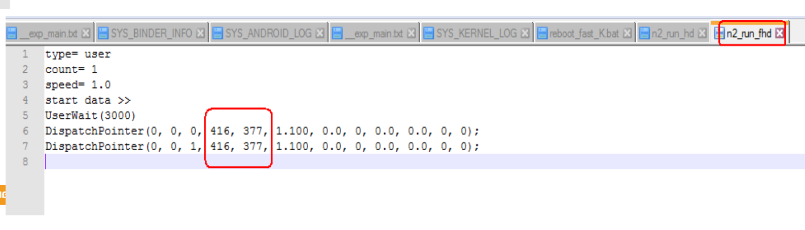

Android memery
由于memory 时序容易受到走线、电源系统及温度等因素的干扰，导致memory接口的不稳定，从而造成几率性不能下载、无法开机或者系统不稳定的情况； 使用ETT工具，自动同步memory设备，调试一组最优化的memory时序设定用于量产，同时检测memory接口的稳定性,避免因时序不稳定导致的系列问题； 因此，在导入新layout或者memory chip的时候都请跑一遍ETT。
参考文档
0001_MT6765_62_ETT_&_stress_test_reference_for_LP4X_V1.6.pdf
full K： 目前MTK的架构为第一次开机preloader做完整的full K.只要做完一次full K，从这次以后的开机均走fask K流程。能节约2~3s左右。目的是减少不必要的校准项目，加快开机速度。->依赖于flash中的特殊分区储存参数。
ETT实验过程
1.ett测试条件
未烧录过的单板
下载过程序的板子请务必先Format whole flash
工具:支持MT6765_62平台的Flash tool(W1748以后版本)
ETT BIN说明:https://online.mediatek.com/qvl/_layouts/15/mol/qvl/ext/QVLHomeExternal.aspx 下载对应平台、对应memory的ETT bin。
必须用电源给VBAT供电，高低温环境下测试不能使用电池
手机上的NTC需要下拉10K电阻到GND， 模拟电池本身的NTC
2.ett测试过程
1.测试型号：
32+3：KMDX60018M_B425
64+4：KMDH6001DA-B422
2.bin文件下载方式：

1.烧录bin无打印问题分析
组合键Ctrl+Alt+A调出flash tool的brom Adapter选择ETT bin设置start address(0x204000)勾上Jump点击download；

烧录后发现无打印，咨询MTK后，发现串口TX/RX实际电压为1.8v，因为下载MT6765_ETT-enc_KMDX60018M_B425_RELEASE.bin后并没有打开3.3v电平转换开关，我们用的3.3v串口，电平不匹配，原理图如下，需要硬件打开以下两个供电：
IO_3V3(GPIO_EXT1 B:GPIO164)需要打开：

GPIO_EXT8 B:GPIO171 串口电平转换：

2.Vdram电平为0问题
(Vcore NV, Vdram NV, Vddq NV)请用万用表测试对应环境温度的电压， 确认Vcore,Vmem, Vddq电压在20mV范围以内即可。

1.经测量Vcore 和Vddq 是正常的，但是无法调高调低。
2.vdram量出来是0，量的是MT6357 H17 vdram脚，不知道什么原因。根据MTK回复，要我换成VDD2进行测试，常温测试结果为1.12v，符合要求。

3.按照文档MT6765_62 ETT & stress test reference for LP4X V1.6.pdf操作，EET测试了10几分钟，卡住了，更换MTK重新提供的bin文件后测试ok，并提示成功，打印如下：
根据文档描述，判断成功的两个依据：
1.Dram Data rate = 3200表示memery能跑到3200MHZ。
2.全部都是PASS。
[HQA] information for measurement, Dram Data rate = 3200
[Read Voltage]
[HQALOG] 3200 Vcore_HQA = 800000
[HQALOG] 3200 Vdram_HQA = 1125000
[HQALOG] 3200 Vddq_HQA = 600000
[Cmd Bus Training window]
VrefCA Range : 1
VrefCA
[HQALOG] 3200 VrefCA Channel0 Rank0 41
[HQALOG] 3200 VrefCA Channel0 Rank1 41
[HQALOG] 3200 VrefCA Channel1 Rank0 46
[HQALOG] 3200 VrefCA Channel1 Rank1 42
CA_Window
[HQALOG] 3200 CA_Window Channel0 Rank0 57 (bit 3)
[HQALOG] 3200 CA_Window Channel0 Rank1 56 (bit 3)
[HQALOG] 3200 CA_Window Channel1 Rank0 57 (bit 3)
[HQALOG] 3200 CA_Window Channel1 Rank1 56 (bit 4)
CA Min Window(%)
[HQALOG] 3200 CA_Window(%) Channel0 Rank0 90% (PASS)
[HQALOG] 3200 CA_Window(%) Channel0 Rank1 88% (PASS)
[HQALOG] 3200 CA_Window(%) Channel1 Rank0 90% (PASS)
[HQALOG] 3200 CA_Window(%) Channel1 Rank1 88% (PASS)
[RX minimum per bit window]
Delaycell measurement(/100ps)
VrefRX
[HQALOG] 3200 VrefRX Channel0 Rank0 12
[HQALOG] 3200 VrefRX Channel0 Rank1 11
[HQALOG] 3200 VrefRX Channel1 Rank0 12
[HQALOG] 3200 VrefRX Channel1 Rank1 12
RX_Window
[HQALOG] 3200 RX_Window Channel0 Rank0 34 (bit 7)
[HQALOG] 3200 RX_Window Channel0 Rank1 35 (bit 2)
[HQALOG] 3200 RX_Window Channel1 Rank0 36 (bit 12)
[HQALOG] 3200 RX_Window Channel1 Rank1 36 (bit 3)
RX Window(%)
[HQALOG] 3200 RX_Window(%) Channel0 Rank0 22134/100ps (71%) (PASS)
[HQALOG] 3200 RX_Window(%) Channel0 Rank1 22785/100ps (73%) (PASS)
[HQALOG] 3200 RX_Window(%) Channel1 Rank0 23436/100ps (75%) (PASS)
[HQALOG] 3200 RX_Window(%) Channel1 Rank1 23436/100ps (75%) (PASS)
[TX minimum per bit window]
VrefDQ Range : 0
VrefDQ
[HQALOG] 3200 VrefDQ Channel0 Rank0 20
[HQALOG] 3200 VrefDQ Channel0 Rank1 20
[HQALOG] 3200 VrefDQ Channel1 Rank0 26
[HQALOG] 3200 VrefDQ Channel1 Rank1 22
TX_Window
[HQALOG] 3200 TX_Window Channel0 Rank0 20 (bit 4)
[HQALOG] 3200 TX_Window Channel0 Rank1 23 (bit 5)
[HQALOG] 3200 TX_Window Channel1 Rank0 21 (bit 2)
[HQALOG] 3200 TX_Window Channel1 Rank1 23 (bit 2)
TX Min Window(%)
[HQALOG] 3200 TX_Window(%) Channel0 Rank0 63% (PASS)
[HQALOG] 3200 TX_Window(%) Channel0 Rank1 72% (PASS)
[HQALOG] 3200 TX_Window(%) Channel1 Rank0 66% (PASS)
[HQALOG] 3200 TX_Window(%) Channel1 Rank1 72% (PASS)
具体LV/NV/HV测试结果请参考以下文件：
测试结果
3.编译LV/NV/HV不同preloader镜像
分别修改和编译NTNV， HTLV， LTHV对应的三份preloader bin， 测试的时候需要选择对应的preloader bin。
根据以下修改，设置不同宏编译三份preloader：
--- a/vendor/mediatek/proprietary/bootable/bootloader/preloader/platform/mt6765/src/drivers/inc/emi.h
+++ b/vendor/mediatek/proprietary/bootable/bootloader/preloader/platform/mt6765/src/drivers/inc/emi.h
@@ -361,7 +361,7 @@ void dram_fatal_set_err(unsigned int err_code, unsigned int mask, unsigned int o
//================================================
//=============pmic related api for ETT HQA test ==============
//================================================
-#if __ETT__
+#if 1
#define DRAM_HQA
#endif
#ifdef DRAM_HQA
//#define HVCORE_HVDRAM
#define NVCORE_NVDRAM //设置不同宏编译三份preloader
//#define LVCORE_LVDRAM
//#define HVCORE_LVDRAM
//#define LVCORE_HVDRAM
pass判断方法
具体请参考其中文档MT6765_62 ETT & stress test reference for LP4X V1.6.pdf，提出了以下几个测试点：
ETT test step by step (ETT测试主要是调试一组最优化的memory时序设定用于量产，需要空板(emmc未烧录)+焊接串口) 这块主要是软件人员配合硬件在新DDR上做验证
MTK Eye-Scan Function (判断ETT测试结果)
4.Stress Test电压测量
为了验证DRAM的稳定性，接下来便做Stress test，stress test前测量Vcore电压需要在开机后测量，并参考以下说明，设定固定的Vcore档位后再用示波器测量。

1.测量电压时， 请注意分别download对应HV/NV/LV的preloader bin开机后测试，经测试3+32型号机器符合表格要求。
查看dvfs,发现和文档中描述的节点有点不一致：
PAYTABLETM8:/ # find sys -name dvfsrc*
sys/devices/platform/10012000.dvfsrc/dvfsrc-up
sys/devices/platform/10012000.dvfsrc/10012000.dvfsrc:dvfsrc-met/dvfsrc_met_dump
sys/devices/platform/10012000.dvfsrc/10012000.dvfsrc:dvfsrc-debug/dvfsrc_force_vcore_dvfs_opp
sys/devices/platform/10012000.dvfsrc/10012000.dvfsrc:dvfsrc-debug/dvfsrc_req_hrtbw
sys/devices/platform/10012000.dvfsrc/10012000.dvfsrc:dvfsrc-debug/dvfsrc_req_vcore_opp
sys/devices/platform/10012000.dvfsrc/10012000.dvfsrc:dvfsrc-debug/dvfsrc_req_vscp
sys/devices/platform/10012000.dvfsrc/10012000.dvfsrc:dvfsrc-debug/dvfsrc_freq_hopping
sys/devices/platform/10012000.dvfsrc/10012000.dvfsrc:dvfsrc-debug/dvfsrc_req_ext_bw
sys/devices/platform/10012000.dvfsrc/10012000.dvfsrc:dvfsrc-debug/dvfsrc_req_bw
sys/devices/platform/10012000.dvfsrc/10012000.dvfsrc:dvfsrc-debug/dvfsrc_dump
sys/devices/platform/10012000.dvfsrc/10012000.dvfsrc:dvfsrc-debug/dvfsrc_req_ddr_opp
sys/devices/platform/10012000.dvfsrc/10012000.dvfsrc:dvfsrc-up/dvfsrc_opp_table
sys/firmware/devicetree/base/scp_dvfs/dvfsrc-opp-num
sys/firmware/devicetree/base/dvfsrc@10012000
sys/firmware/devicetree/base/dvfsrc@10012000/dvfsrc-up
sys/firmware/devicetree/base/dvfsrc@10012000/dvfsrc-met
sys/firmware/devicetree/base/dvfsrc@10012000/dvfsrc-debug
sys/firmware/devicetree/base/__symbols__/dvfsrc_freq_opp1
sys/firmware/devicetree/base/__symbols__/dvfsrc
sys/firmware/devicetree/base/__symbols__/dvfsrc_freq_opp2
sys/firmware/devicetree/base/__symbols__/dvfsrc_freq_opp0
130|PAYTABLETM8:/ # cat sys/devices/platform/10012000.dvfsrc/10012000.dvfsrc:dvfsrc-debug/dvfsrc_dump
Vcore : 650000 uv
DDR : 1534000 khz
GPS_HOPPING: 0
PTPOD_0 : 00100090
PTPOD_10 : 000f9855
INFO2 : 00000000
BASIC_CONTROL : 0x0000017b
SW_REQ 1~2 : 00000000, 00000000
SW_BW_0~4 : 0, 3, 1, 0, 0
INT : 0x00000000
INT_EN : 0x00000003
MD_SCENARIO : 0x00000000
MD_RSV0 : 0x00000001
SCP_VCORE_REQ : 0x000c0000
CURRENT_LEVEL : 0x00010000
FORCE_OPP_IDX : 16
CURR_DVFS_OPP : 15
CURR_VCORE_OPP : 3
CURR_DRAM_OPP : 2
DVFSRC_LAST : 0x00000007
[0]DVFSRC_REC 0~2: 003cb721,00000000,82100010
[1]DVFSRC_REC 0~2: 003cb721,00000000,81000010
[2]DVFSRC_REC 0~2: 003cb7e8,00000000,81200090
[3]DVFSRC_REC 0~2: 003cb7e9,00000000,82000090
[4]DVFSRC_REC 0~2: 003cba18,00000000,82100010
[5]DVFSRC_REC 0~2: 003cba19,00000000,81000010
[6]DVFSRC_REC 0~2: 003cbaa5,00000000,01000010
[7]DVFSRC_REC 0~2: 003cbaa6,00000000,00000010
POWERON_CONFIG_EN : 0x00000003
SPM_SW_FLAG : 0x00200182
SPM_SW_RSV_9 : 0x80000001
MD2SPM_DVFS_CON : 0x00000000
SPM_DVFS_EVENT_STA : 0xffff0000
SPM_DVFS_LEVEL : 0x00000000
SPM_DFS_LEVEL : 0x00000001
SPM_DVS_LEVEL : 0x00010001
SPM_DVFS_CMD0~4 : 0x152a002d, 0x152a0025, 0x152a001d, 0x152a0015, 0x152a0015
PCM_IM_PTR : 0x77ff5d6c
1|PAYTABLETM8:/ # cat sys/devices/platform/10012000.dvfsrc/10012000.dvfsrc:dvfsrc-met/dvfsrc_met_dump
NUM_VCORE_OPP : 16
NUM_OPP_INFO : 4
OPP : 6
FREQ : 3200000
VCORE : 800000
x__SPM_LEVEL : 512
NUM SRC_REQ: 15
MD2SPM : 0
DDR__SW_REQ1_PMQOS : 2
DDR__SW_REQ2_CM : 1
DDR__EMI_TOTAL : 0
DDR__QOS_BW : 0
VCORE__SW_REQ1_PMQOS : 0
VCORE__SW_REQ2_CM : 0
VCORE__SCP : 0
PMQOS_TOTAL : 24
PMQOS_BW0 : 0
PMQOS_BW1 : 19
PMQOS_BW2 : 1
PMQOS_BW3 : 4
PMQOS_BW4 : 0
MD_REQ_OPP : 1
2.查看当前vcore的DVFS OPP table，如下图所示显示NV电压，有的cat出来OPP13，OPP14是0.675V或0.65V，以cat出来的值为准，测量电压只要与cat值一致即可。
130|PAYTABLETM8:/ # cat sys/devices/platform/10012000.dvfsrc/10012000.dvfsrc:dvfsrc-up/dvfsrc_opp_table
FW_TYPE : 1
NUM_VCORE_OPP : 4
NUM_DDR_OPP : 3
NUM_DVFSRC_OPP : 16
[OPP0 ]: 800000 uv 3200000 khz
[OPP1 ]: 800000 uv 3200000 khz
[OPP2 ]: 800000 uv 3200000 khz
[OPP3 ]: 800000 uv 2400000 khz
[OPP4 ]: 800000 uv 3200000 khz
[OPP5 ]: 800000 uv 2400000 khz
[OPP6 ]: 800000 uv 3200000 khz
[OPP7 ]: 800000 uv 2400000 khz
[OPP8 ]: 700000 uv 2400000 khz
[OPP9 ]: 700000 uv 2400000 khz
[OPP10]: 700000 uv 1534000 khz
[OPP11]: 700000 uv 2400000 khz
[OPP12]: 700000 uv 1534000 khz
[OPP13]: 650000 uv 1534000 khz
[OPP14]: 650000 uv 1534000 khz
[OPP15]: 650000 uv 1534000 khz
3.执行adb命令分别固定5档位，每执行一条命令固定一个档位，测量一次Vcore电压， 共执行5次命令测量5次，看和设定的电压差异多大，默认测量到的是Opp0的Vcore电压。后续测量到的电压要覆盖到三种频率（3200,2400,1534）， 三种电压（0.8， 0.,0.65）即可，例如：频率2400电压0.8v可以测试OPP1也可以测试OPP2。
实测vcore电压0.7v：
echo 8 > sys/devices/platform/10012000.dvfsrc/10012000.dvfsrc:dvfsrc-debug/dvfsrc_force_vcore_dvfs_opp
实测vcore电压0.8v：
echo 7 > sys/devices/platform/10012000.dvfsrc/10012000.dvfsrc:dvfsrc-debug/dvfsrc_force_vcore_dvfs_opp
实测vcore电压0.65v：
echo 13 > sys/devices/platform/10012000.dvfsrc/10012000.dvfsrc:dvfsrc-debug/dvfsrc_force_vcore_dvfs_opp
查看设置是否生效：
echo 13 > sys/devices/platform/10012000.dvfsrc/10012000.dvfsrc:dvfsrc-debug/dvfsrc_force_vcore_dvfs_opp
下面表示生效了
cat sys/devices/platform/10012000.dvfsrc/10012000.dvfsrc:dvfsrc-debug/dvfsrc_dump
Vcore : 650000 uv
DDR : 1534000 khz
GPS_HOPPING: 0
PTPOD_0 : 00100090
PTPOD_10 : 000f9855
INFO2 : 00000000
如果需要测试HV的电压， 打开DVFS_Nenamark_Memtester_Script文件夹，双击里面的set_opp_table_HV.bat（先设置device id）来设置电压。如果需要测试LV的电压，双击set_opp_table_LV.bat。设置完毕可以看到opp table电压已经变化。
这里发现根本无法设置成功，因为已经不存在dvfsrc_set_vcore_uv这个节点了，后面通过MTK给的patch直接写死电压值,HV opp table如下：
k65v1_64_bsp:/ # cat /sys/devices/platform/10012000.dvfsrc/10012000.dvfsrc:dvfsrc-up/dvfsrc_opp_table
FW_TYPE : 2
NUM_VCORE_OPP : 4
NUM_DDR_OPP : 3
NUM_DVFSRC_OPP : 16
[OPP0 ]: 843750 uv 1866000 khz
[OPP1 ]: 843750 uv 1866000 khz
[OPP2 ]: 843750 uv 1866000 khz
[OPP3 ]: 843750 uv 1534000 khz
[OPP4 ]: 843750 uv 1866000 khz
[OPP5 ]: 843750 uv 1534000 khz
[OPP6 ]: 843750 uv 1866000 khz
[OPP7 ]: 843750 uv 1534000 khz
[OPP8 ]: 737500 uv 1534000 khz
[OPP9 ]: 737500 uv 1534000 khz
[OPP10]: 737500 uv 1200000 khz
[OPP11]: 737500 uv 1534000 khz
[OPP12]: 737500 uv 1200000 khz
[OPP13]: 737500 uv 1200000 khz
[OPP14]: 737500 uv 1200000 khz
[OPP15]: 687500 uv 1200000 khz
k65v1_64_bsp:/ # cat /sys/devices/platform/10012000.dvfsrc/helio-dvfsrc/dvfsrc_dump | grep -e uv -e khz -e CURR_ -e FLAG
Vcore : 843750 uv
DDR : 1866000 khz
CURR_DVFS_OPP : 6
CURR_VCORE_OPP : 0
CURR_DRAM_OPP : 0
SPM_SW_FLAG : 0x00000400
k65v1_64_bsp:/ # cat /sys/devices/platform/10012000.dvfsrc/helio-dvfsrc/dvfsrc_dump | grep -e uv -e khz -e CURR_ -e FLAG
Vcore : 843750 uv
DDR : 1866000 khz
CURR_DVFS_OPP : 6
CURR_VCORE_OPP : 0
CURR_DRAM_OPP : 0
SPM_SW_FLAG : 0x00000400
k65v1_64_bsp:/ # cat /sys/devices/platform/10012000.dvfsrc/helio-dvfsrc/dvfsrc_dump | grep -e uv -e khz -e CURR_ -e FLAG
Vcore : 843750 uv
DDR : 1866000 khz
CURR_DVFS_OPP : 6
CURR_VCORE_OPP : 0
CURR_DRAM_OPP : 0
SPM_SW_FLAG : 0x00000400
k65v1_64_bsp:/ # cat /sys/devices/platform/10012000.dvfsrc/helio-dvfsrc/dvfsrc_dump | grep -e uv -e khz -e CURR_ -e FLAG
Vcore : 843750 uv
DDR : 1866000 khz
CURR_DVFS_OPP : 6
CURR_VCORE_OPP : 0
CURR_DRAM_OPP : 0
SPM_SW_FLAG : 0x00000400
k65v1_64_bsp:/ # cat /sys/devices/platform/10012000.dvfsrc/helio-dvfsrc/dvfsrc_dump | grep -e uv -e khz -e CURR_ -e FLAG
Vcore : 737500 uv
DDR : 1534000 khz
CURR_DVFS_OPP : 11
CURR_VCORE_OPP : 1
CURR_DRAM_OPP : 1
SPM_SW_FLAG : 0x00000400
k65v1_64_bsp:/ # cat /sys/devices/platform/10012000.dvfsrc/helio-dvfsrc/dvfsrc_dump | grep -e uv -e khz -e CURR_ -e FLAG
Vcore : 687500 uv
DDR : 1200000 khz
CURR_DVFS_OPP : 15
CURR_VCORE_OPP : 3
CURR_DRAM_OPP : 2
SPM_SW_FLAG : 0x00000400
k65v1_64_bsp:/ #
patch内容如下：
--- a/vendor/mediatek/proprietary/bootable/bootloader/preloader/platform/mt6765/src/drivers/mtk_vcore_opp.c
+++ b/vendor/mediatek/proprietary/bootable/bootloader/preloader/platform/mt6765/src/drivers/mtk_vcore_opp.c
@@ -5,6 +5,12 @@
#include "mtk_vcore_opp.h"
+// [NEW FEATURE]-BEGIN by wugangnan@paxsz.com 2021-03-12, for HV/LV diffrent opp table
#define VCORE_HV_ENABLE
/* #define VCORE_LV_ENABLE */
#define VCORE_VMODE_SHIFT 0
#define DVFSRC_BASE (0x10012000)
+static int dvfs_v_mode;
+// [NEW FEATURE]-END by wugangnan@paxsz.com 2021-03-12, for HV/LV diffrent opp table
+
static int vcore_uv_table[VCORE_OPP_NUM];
void set_vcore_uv_table(int vcore_opp, int vcore_uv)
@@ -71,10 +77,18 @@ void dvfsrc_opp_level_mapping(void)
int ct_enable = 0;
int ddr_type = mt_get_dram_type();
int info2 = seclib_get_devinfo_with_index(18);
-
- /* todo: remove when LP4 default enable */
- if (ddr_type != TYPE_LPDDR3)
- skip = 1;
+ // [NEW FEATURE]-BEGIN by wugangnan@paxsz.com 2021-03-12, for HV/LV diffrent opp table
+ u32 rsv4 = 0;
+ // [NEW FEATURE]-END by wugangnan@paxsz.com 2021-03-12, for HV/LV diffrent opp table
+
+// [NEW FEATURE]-BEGIN by wugangnan@paxsz.com 2021-03-12, for HV/LV diffrent opp table
+#if defined(VCORE_HV_ENABLE)
+ dvfs_v_mode = 1;
+#elif defined(VCORE_LV_ENABLE)
+ dvfs_v_mode = 3;
+#endif
+ rsv4 |= dvfs_v_mode << VCORE_VMODE_SHIFT;
+// [NEW FEATURE]-END by wugangnan@paxsz.com 2021-03-12, for HV/LV diffrent opp table
#if defined(MTK_VCORE_DVFS_SKIP_EFUSE)
skip = 1;
@@ -132,7 +146,33 @@ void dvfsrc_opp_level_mapping(void)
print("%s: disabled vcore_opp_uv: %d, %d, %d, %d\n", __func__,
vcore_opp_0_uv, vcore_opp_1_uv, vcore_opp_2_uv, vcore_opp_3_uv);
}
+ // [NEW FEATURE]-BEGIN by wugangnan@paxsz.com 2021-03-12, for HV/LV diffrent opp table
+ if (dvfs_v_mode == 1) {
+ /* HV setting */
+ vcore_opp_0_uv = 843750;
+ vcore_opp_1_uv = 737500;
+ vcore_opp_2_uv = 737500;
+ if (vcore_opp_3_uv == 675000)
+ vcore_opp_3_uv = 712500;
+ else
+ vcore_opp_3_uv = 687500;
+ } else if(dvfs_v_mode ==3) {
+ /* LV setting */
+ vcore_opp_0_uv = 756250;
+ vcore_opp_1_uv = 662500;
+ vcore_opp_2_uv = 662500;
+ if (vcore_opp_3_uv == 675000)
+ vcore_opp_3_uv = 637500;
+ else
+ vcore_opp_3_uv = 612500;
+ }
+ mt_reg_sync_writel(rsv4, DVFSRC_BASE + 0x610);
+ print("%s: VMODE=%d, RSV4=%x\n",
+ __func__,
+ dvfs_v_mode,
+ __raw_readl(DVFSRC_BASE + 0x610));
+ // [NEW FEATURE]-END by wugangnan@paxsz.com 2021-03-12, for HV/LV diffrent opp table
print("%s: final vcore_opp_uv: %d, %d, %d, %d\n", __func__,
vcore_opp_0_uv, vcore_opp_1_uv, vcore_opp_2_uv, vcore_opp_3_uv);
diff --git a/vendor/mediatek/proprietary/trustzone/atf/v1.4/plat/mediatek/mt6765/drivers/spm/mt_spm_vcorefs.c b/vendor/mediatek/proprietary/trustzone/atf/v1.4/plat/mediatek/mt6765/drivers/spm/mt_spm_vcorefs.c
index fbe1b6cf697..59b1e31a2cf 100644
--- a/vendor/mediatek/proprietary/trustzone/atf/v1.4/plat/mediatek/mt6765/drivers/spm/mt_spm_vcorefs.c
+++ b/vendor/mediatek/proprietary/trustzone/atf/v1.4/plat/mediatek/mt6765/drivers/spm/mt_spm_vcorefs.c
@@ -380,10 +380,25 @@ static int get_vb_volt(int vcore_opp)
return ret * 25000;
}
+#define V_VMODE_SHIFT 0
static void spm_vcorefs_vcore_setting(__uint64_t flag)
{
int info2 = spm_vcorefs_get_efuse_data(2);
-
+ // [NEW FEATURE]-BEGIN by wugangnan@paxsz.com 2021-03-12, for HV/LV diffrent opp table
+ int dvfs_v_mode = 0;
+ int dvfsrc_rsrv;
+
+ dvfsrc_rsrv = mmio_read_32(DVFSRC_RSRV_4);
+ dvfs_v_mode = (dvfsrc_rsrv >> V_VMODE_SHIFT) & 0x3;
+
+ if (dvfs_v_mode != 0)
+ {
+ if (dvfs_v_mode == 1)
+ flag = 1; /* HV */
+ else if (dvfs_v_mode == 3)
+ flag = 2; /* LV */
+ }
+ // [NEW FEATURE]-END by wugangnan@paxsz.com 2021-03-12, for HV/LV diffrent opp table
vcore_opp_0_uv = 800000;
vcore_opp_1_uv = 700000;
/* apply MD VB */
5.Stress test测试步骤
Step1： 搭建环境
• Download and install JAVA：
▪ http://www.java.com
• Install Android SDK to have ADB.
▪ http://developer.android.com/sdk/index.html
▪ Remember to add ADB in your PATH.
• EX: C:\ path = %path%; YOU_ADB_PATH
• 获取ADB之后，在ADB安装位置的tool文件夹下产生一个monkeyrunner.bat的文件，请把该文
件的路径添加到计算机的PATH， EX： ADB装在D:\Program Files， monkeyrunner.bat位于
D:\Program Files\Android\android-sdk\tools，把D:\Program Files\Android\android-sdk\tools添加
到PC系统的PATH；
• Install a python environment to be able to run python programs.
▪ For example, download Python 2.7.3 Windows Installer (Windows binary -- does not include source) from
http://www.python.org/getit/
DVFS_Nenamark_Memtester_Script，suspend_and_DVFS script在OA的路径当中不能包含空格和中文
Step2.根据测试场景选择对应的load (HTLV/LTHV/NTNV),下载后第一次开机进行
如下设置
设置>显示>休眠>30分钟，
设置>Developer options>stay awake 设置为不休眠
手机设置为飞行模式，关闭MTK mobile log
注意: Nenamark的测试有可能上传手机资讯, 测试时请不要连接网络,如有 疑虑, 请不要进行此项测试， 脚本会关闭MD和wifi
Step3.设置device id
DVFS_Nenamark_memtest_script_LPDDR4文件夹中编辑start_DVFS_N2_Mem_test.bat脚本。 把set deviceid=-s 0x?? 设置成所测试手机的device id,如下图所示,然后保存.

Step4. Install_Nenamark2.bat

安装完毕会自动结束，可以在手机里面找到一个NenaMark2的图标, 双击会出现 choose what to allow NenaMark2 to access 的讯息, 点击 continue给权限。然后双击Nenamark2的图标，点击run需要先跑一次3D动画。
Step5. Push.bat
编辑Push.bat脚本，把set deviceid=-s 0x?? 设置成所测试手机的deviceid，双击运行Push.bat(出现下图并退出),主要是以下几个文件：
echo "=== push run.sh, start, back ==="
adb %deviceid% push run.sh /data/run.sh
adb %deviceid% shell "chmod 777 /data/run.sh"
adb %deviceid% push n2_run /data/n2_run //需要配置run键 x/y坐标
adb %deviceid% push n2_back /data/n2_back
echo "=== install DVFS script ==="
adb %deviceid% push vcorefs_cervino /data/vcorefs_cervino
adb %deviceid% push vcorefs_cervino.sh /data/vcorefs_cervino.sh
adb %deviceid% shell "chmod 777 /data/vcorefs_cervino"
adb %deviceid% shell "chmod 777 /data/vcorefs_cervino.sh"
goto :eof
这里需要配置n2_run文件中的run键 x/y坐标，实例如下：

Step6. OPP table配置
如果做HV测试先双击set_opp_table_HV.bat进行配置HV OPP table
如果做LV测试先双击set_opp_table_LV.bat进行配置LV OPP table
如果做NV测试不需要配置OPP table
注意：上述脚本都需要编辑填入手机正确的device id。
Step7. run.sh && vcorefs_cervino.sh
执行以下指令：
C:\Users\wugangnan>adb shell
PAYTABLETM8:/ # sh /data/run.sh &
PAYTABLETM8:/ # sh /data/vcorefs_cervino.sh &
Step8. start_DVFS_N2_Mem_test.bat
DVFS_Nenamark_memtest_script_LPDDR4文件夹中双击start_DVFS_N2_Mem_test.bat脚本，会弹出n个框图,同时手机屏幕上3D动画在自动跑动,如果3D动画无法自动run请查看文档display the x and y point.pdf进行设置，这个脚本是测试DDR DVFS功能压力测试。

可以看到后台在进行memtest测试:
另外参考
https://online.mediatek.com/FAQ#/SW/FAQ25394如下修改可以直接使用userdebug软件进行测试：
--- a/kernel-4.19/drivers/misc/mediatek/dramc/mt6765/mtk_dramc.h
+++ b/kernel-4.19/drivers/misc/mediatek/dramc/mt6765/mtk_dramc.h
@@ -17,9 +17,9 @@
#endif
/* #define RUNTIME_SHMOO */
-#if defined(CONFIG_MTK_ENG_BUILD)
+//#if defined(CONFIG_MTK_ENG_BUILD)
#define DRAMC_MEMTEST_DEBUG_SUPPORT
-#endif
+//#endif
Step9. 注意事项
此时千万不要拔掉USB，需要跑8小时Stress test
请参看‘判断测试pass的方法’对测试结果进行分析
重复上述步骤将>3部手机的HTLV\LTHV\NTNV所有条件下的Stress test完成。
高温环境测试换用低压preloader bin, 低温环境测试换用高压preloader bin, 常温环境用 常温preloader bin.
每次变化环境都要重新download.
6.Nenamark2 + DVFS for Fast-K测试步骤
根据文档描述，就是烧录高温/低温的preloader进行相同的测试。

7.Suspend/Resume测试步骤
Preloader bin使用默认的即可.
屏幕不要设置为always on， 手机设置为飞行模式，关闭MTK mobile log
Step1. 打开suspend_test_v0.4文件夹，手机开debug功能
Step2.连接手机，双击suspend_loop_push.bat脚本，运行完毕后按任意键结束
Step3. 调出一个cmd命令框，输入如下命令
adb shellsh /data/suspend_loop.sh &
Step4.拔掉usb,拔掉usb,拔掉usb, 重要的事情说三次
可接power monitor，也可以接usb adapter，不要直接用电脑供电给手机 测试时间12个小时
发现拔掉usb后，自动休眠唤醒就停止了，经研究发现sh的父进程是adbd，当usb连接断掉的时候，就导致程序退出，在网上找到参考方法nohup，注意:nohup是永久执行,&是指在后台运行,如下步骤：
首先使用paxtool.bat工具unlock功能将机器解锁。
adb remount
双击suspend_loop_push.bat和suspned_resume_test_v0.4.bat
adb shell
执行cd /data
执行nohup /data/suspend_loop.sh &
8.REBOOT测试步骤
1.DDR reserve mode Reboot测试步骤
DDR Reserve mode test： 就是在打开DDR reserve mode 功能情况下测试reboot， DDR reserve mode是在reboot前让DRAM 进入self refresh, 确保reboot时DRAM资料可以保留, 在 reboot后再把资料捞出來debug用。
Step1. Preloader bin使用默认的即可. 屏幕不要设置为always on，手机设置为飞行模式，关闭MTK mobile log
Step2.打开reboot_script文件夹，编辑reboot_ddr_reserve_mode.bat把device id改成测试机器 id后保存，双击该脚本出现下图的框图，和其他reboot比较区别在于有 ”reboot with ddr reserve mode”字样 Note:Opp table 每16次循环。
Step3.需要抓UART log进行分析， 需要抓UART log进行分析， 需要抓UART log进行分析,重要的事情说三遍，测试时间12小时。
Step4.请参看‘判断测试pass的方法1和3’ 对测试结果进行分析。
Step5.请打开UART log，对UART log进行关键字搜索,如果log太大请用File-Splitter （网上下载） 把log分割成小份进行分析。
测试Fail的关键字搜索“[RGU] WDT DDR reserve mode FAIL!”
▪ 测试PASS的关键字搜索“ DDR RESERVED “会出现如下log表示测试pass
[RGU] WDT DDR reserve mode success! 1387F1
[DDR Reserve] DCS/DVFSRC success! (dcs_en=0, dvfsrc_en=1)
[RGU] WDT DDR reserve mode success! 1387F1
[RGU] DDR RESERVE Success 1
[DDR Reserve] release dram from self-refresh PASS!
Step6. 重复上述步骤将>3部手机在常温条件下reboot完成。
脚本修改点：
由于系统节点dvfsrc_enable不需要，dvfsrc_force_vcore_dvfs_opp路径也不一样，需要修改脚本如下：
@echo off
setlocal EnableDelayedExpansion
set deviceid=-s XCSKR4VGSCNNV46D
set round=0
:loop
for /l %%x in (0, 1, 15) do (
adb %deviceid% wait-for-device && adb %deviceid% root
adb %deviceid% wait-for-device && adb %deviceid% shell "echo %%x > /sys/devices/platform/10012000.dvfsrc/10012000.dvfsrc:dvfsrc-debug/dvfsrc_force_vcore_dvfs_opp"
::: sleep 1 sec
ping 1.1.1.1 -n 1 -w 1000 > nul
adb %deviceid% wait-for-device && adb %deviceid% reboot ddr-reserve
echo reboot ddr-reserve, opp table: %%x
echo %date% %time%
)
set /a round=%round%+16
echo reboot ddr-reserve, round: %round%, opp table: %%x
goto loop
pause
2.Full-K Reboot测试步骤
Step1. Preloader 使用full k bin，软件修改点：
--- a/vendor/mediatek/proprietary/bootable/bootloader/preloader/platform/mt6765/src/drivers/inc/dramc_pi_api.h
+++ b/vendor/mediatek/proprietary/bootable/bootloader/preloader/platform/mt6765/src/drivers/inc/dramc_pi_api.h
@@ -368,7 +368,7 @@
// Preloader: using config CFG_DRAM_CALIB_OPTIMIZATION to identify
#if (FOR_DV_SIMULATION_USED==0)
// Preloader: using config CFG_DRAM_CALIB_OPTIMIZATION to identify
-#define SUPPORT_SAVE_TIME_FOR_CALIBRATION CFG_DRAM_CALIB_OPTIMIZATION
+#define SUPPORT_SAVE_TIME_FOR_CALIBRATION 0
/***********************************************************************/
diff --git a/vendor/mediatek/proprietary/bootable/bootloader/preloader/platform/mt6765/src/drivers/inc/emi.h b/vendor/mediatek/proprietary/bootable/bootloader/preloader/platform/mt6765/src/drivers/inc/emi.h
index 65b6fc45fda..58986c7f4a6 100644
--- a/vendor/mediatek/proprietary/bootable/bootloader/preloader/platform/mt6765/src/drivers/inc/emi.h
+++ b/vendor/mediatek/proprietary/bootable/bootloader/preloader/platform/mt6765/src/drivers/inc/emi.h
@@ -361,8 +361,8 @@ void dram_fatal_set_err(unsigned int err_code, unsigned int mask, unsigned int o
//================================================
//=============pmic related api for ETT HQA test ==============
//================================================
-#if __ETT__
-#define DRAM_HQA
+#if 1
+//#define DRAM_HQA
#endif
Step 2.屏幕不要设置为always on，手机设置为飞行模式，关闭MTK mobile log。
Step3.编辑 reboot_full_k.bat把device id改成测试机器id后保存，双击该脚本。
Note1: Full k 每5次更新。
Note2：脚本若无device id，则不需修改。
Step4. opp table显示当前频率档位。
测试结果：
▪ 测试时间12个小时
▪ Step5.请参看‘判断测试pass的方法1和3’ 对测试结果进行分析
▪ Step6. 重复上述步骤将>3部手机在常温条件下reboot完成。
该脚本也需要修改
dvfsrc_force_vcore_dvfs_opp节点路径。
3.Fast-k Reboot测试步骤
此测试项目只对LPDDR4， LPDDR3不需要做这个项目， Preloader bin使用LV bin在常温下测试。
Fast-k Stress test目的：下载软件后第一次开机的校准数据需要保存下来，为后续测试所用。
Step1.打开reboot_script文件夹，编辑reboot_fast_K.bat把device id改成自己的。
Step2. 双击reboot_fast_K.bat进行测试，测试需要12小时。
Step3.请参看‘判断测试pass的方法’对测试结果进行分析。
Step4.请打开UART log，对UART log进行关键字搜索， 测试Fail的关键字搜索“Save calibration result to emmc”，测试PASS的关键字搜索“Bypass saving calibration result to emmc“。
Step5. 重复上述步骤将>3部手机在NT条件下reboot完成。
脚本代码修改：
@echo off
::: REGDUMP BEGIN 1
set devid=XCSKR4VGSCNNV46D
set round=0
set freq=0
::: REGDUMP END 1
:: reboot
adb -s %devid% wait-for-device && adb -s %devid% reboot
:loop
::: REGDUMP BEGIN 2
set /a round=%round%+1
set /a freq=round%%4
::: REGDUMP END 2
:: sleep 40 sec
adb -s %devid% wait-for-device && adb -s %devid% root
ping -n 40 127.1 > nul
adb -s %devid% wait-for-device && adb -s %devid% shell "echo %freq% > /sys/devices/platform/10012000.dvfsrc/10012000.dvfsrc:dvfsrc-debug/dvfsrc_force_vcore_dvfs_opp"
adb -s %devid% wait-for-device && adb -s %devid% shell "cat /sys/devices/platform/10012000.dvfsrc/10012000.dvfsrc:dvfsrc-debug/dvfsrc_dump"
:: reboot
adb -s %devid% wait-for-device && adb -s %devid% reboot
echo reboot, round: %round%, opp table: %freq%
echo %date% %time%
goto loop
pause
Note：若上述Fail和PASS关键字均没有搜索到, 请先自行检查code,看是否有修改掉对应log。
判断测试pass的方法
连续测试后仍能正常运行：测试N小时后还在连续跑测试；
如果有跑memtester的项目：连续测试后memtester还是在跑，如果memtester停止下来就是fail。
memtester的窗口停掉了会出现Error detected，如下图所示：

请运行collect_memtest_log.bat，会出现一个log文件夹把memtester fail log直接抓出来，打包上传给MTK分析即可。
3.在下面两个路径下检查是否有这4个字样： KE,HWT， HW_reboot, MEMTEST,如果下面两个路径中有任何一个字样表示fail,没有那3个字样表示pass：
/data/vendor/aee_exp
/data/aee_exp

上述3个条件任一不满足即可判定为 fail, 这时请将log发送给MTK分析。
M50/M8打开串口方式
M8打开串口请使用如下patch：
M50需要加上如下修改：
index 0170d7254ad..c0293635345 100755
--- a/hardware/interfaces/keymaster/4.0/default/service.cpp
+++ b/hardware/interfaces/keymaster/4.0/default/service.cpp
@@ -29,7 +29,7 @@ int main() {
char value[PROPERTY_VALUE_MAX];
property_get("ro.boot.terminal_name", value, "");
if (strcmp(value, "M50") == 0) {
- return -1;
+ // return -1;
}
//[FEATURE]-Add-END by (lib@paxsz.com) 2021/07/14
diff --git a/hardware/interfaces/keymaster/4.1/default/service.cpp b/hardware/interfaces/keymaster/4.1/default/service.cpp
index b0716cbfeff..08feeea1dfe 100755
--- a/hardware/interfaces/keymaster/4.1/default/service.cpp
+++ b/hardware/interfaces/keymaster/4.1/default/service.cpp
@@ -29,7 +29,7 @@ int main() {
char value[PROPERTY_VALUE_MAX];
property_get("ro.boot.terminal_name", value, "");
if (strcmp(value, "M50") == 0) {
- return -1;
+ // return -1;
}
//[FEATURE]-Add-END by (lib@paxsz.com) 2021/07/14